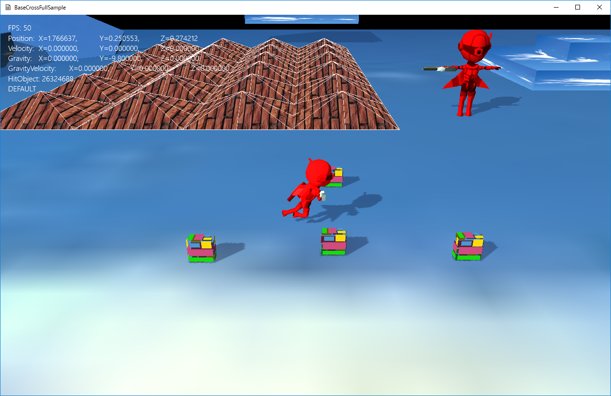

図0107a
void Player::OnCreate() {
//中略
//衝突判定
auto PtrColl = AddComponent<CollisionCapsule>();
//親の影響を受ける
PtrColl->SetIsHitAction(IsHitAction::AutoOnParentSlide);
Matrix4X4 SpanMat; // モデルとトランスフォームの間の差分行列
SpanMat.DefTransformation(
Vector3(1.0f, 1.0f, 1.0f),
Vector3(0.0f, XM_PI, 0.0f),
Vector3(0.0f, -0.5f, 0.0f)
);
//影をつける（シャドウマップを描画する）
auto ShadowPtr = AddComponent<Shadowmap>();
//影の形（メッシュ）を設定
ShadowPtr->SetMeshResource(L"Chara_R_MESH");
ShadowPtr->SetMeshToTransformMatrix(SpanMat);
//描画コンポーネントの設定
auto PtrDraw = AddComponent<PNTBoneModelDraw>();
//描画するメッシュを設定
PtrDraw->SetMeshResource(L"Chara_R_MESH");
PtrDraw->SetMeshToTransformMatrix(SpanMat);
PtrDraw->AddAnimation(L"Default", 60, 20, true, 20.0f);
PtrDraw->AddAnimation(L"Hit", 30, 30, false, 30.0f);
PtrDraw->ChangeCurrentAnimation(L"Default");
//中略
}
Matrix4X4 SpanMat; // モデルとトランスフォームの間の差分行列
SpanMat.DefTransformation(
Vector3(1.0f, 1.0f, 1.0f),
Vector3(0.0f, XM_PI, 0.0f),
Vector3(0.0f, -0.5f, 0.0f)
);
PtrDraw->SetMeshToTransformMatrix(SpanMat);
PtrDraw->AddAnimation(L"Default", 60, 20, true, 20.0f);
PtrDraw->AddAnimation(L"Hit", 30, 30, false, 30.0f);
PtrDraw->ChangeCurrentAnimation(L"Default");
auto PtrDraw = GetComponent<PNTBoneModelDraw>();
PtrDraw->ChangeCurrentAnimation(アニメーション名);
void StaticModel::OnCreate() {
//中略
Matrix4X4 SpanMat; // モデルとトランスフォームの間の差分行列
SpanMat.DefTransformation(
Vector3(1.0f, 1.0f, 1.0f),
Vector3(0.0f, 0.0f, 0.0f),
Vector3(0.0f, -0.25f, 0.0f)
);
auto PtrColl = AddComponent<CollisionCapsule>();
PtrColl->SetFixed(true);
//影をつける（シャドウマップを描画する）
auto ShadowPtr = AddComponent<Shadowmap>();
//影の形（メッシュ）を設定
ShadowPtr->SetMeshResource(L"Chara_Rst_MESH");
ShadowPtr->SetMeshToTransformMatrix(SpanMat);
auto PtrDraw = AddComponent<PNTStaticModelDraw>();
PtrDraw->SetMeshResource(L"Chara_Rst_MESH");
PtrDraw->SetMeshToTransformMatrix(SpanMat);
//中略
}